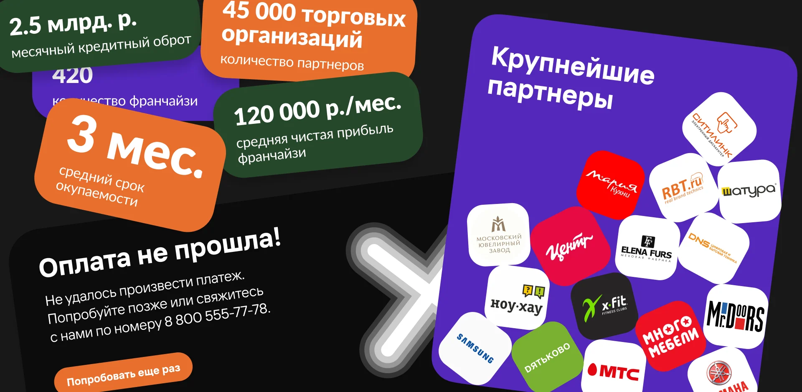
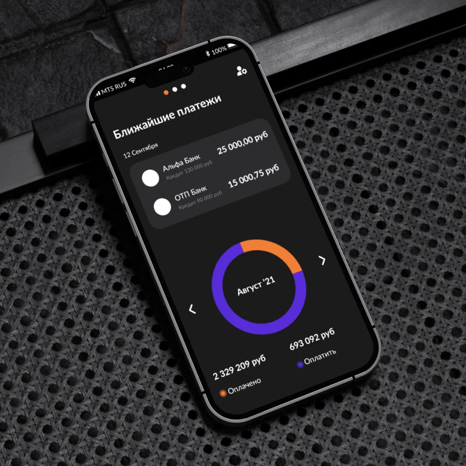
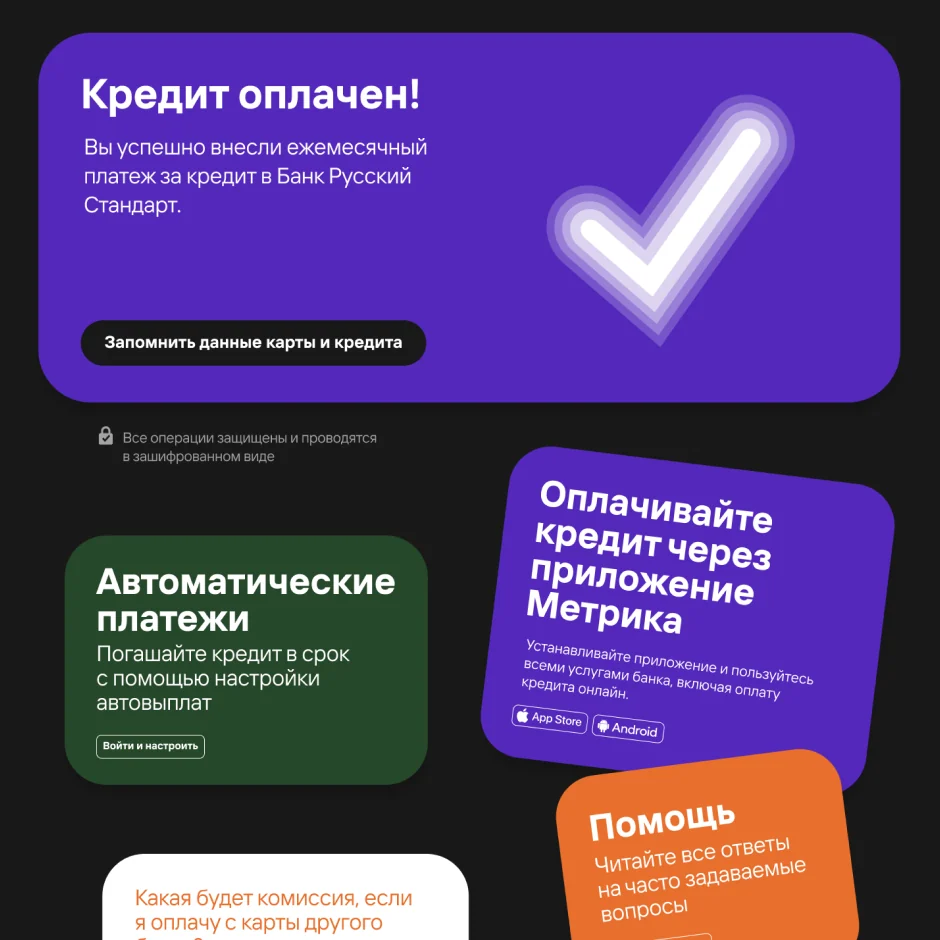
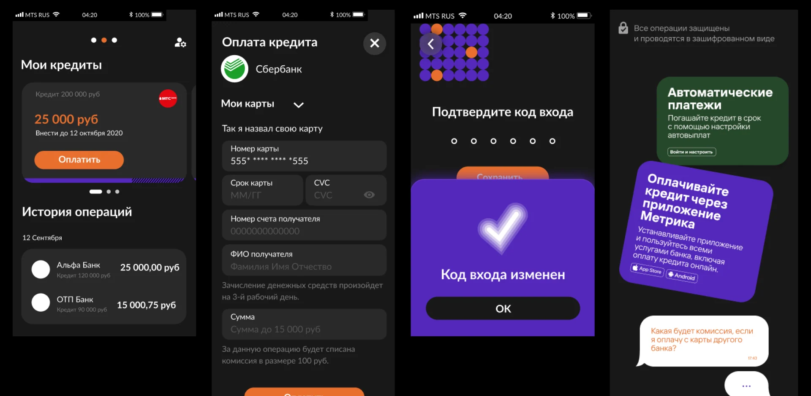

POS Credit
Client
POS Credit
Year
2021
Role
Designer
segment
B2B
audience
banks
visual standard
1
POS Credit — a visual language of trust for B2B lending.
At POS Credit I developed and extended the platform's visual identity, keeping its logic and integrity.
It's a B2B platform connecting banks and lenders — the identity had to support its growth and sharpen its market position.
I produced decks, landings and brand communications for working with banks — strictly on-brand and aligned to strategic goals, with no visual noise.
The visual language stopped being mere decoration and became a tool of trust, growth and positioning.
- Decks and brand communications for working with banks.
- A systematic, professional language as a tool of trust.
- End-to-end B2B communications in the financial sector.
- Still a reference example of end-to-end B2B identity.




Next project · 09
Heatbit